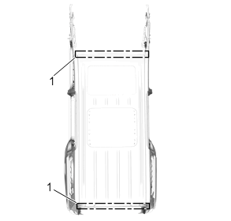
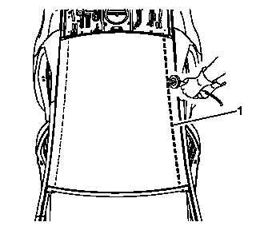
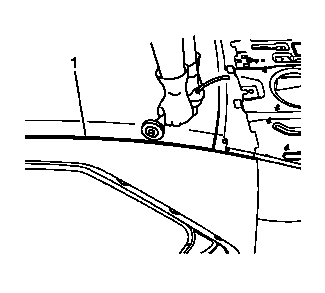
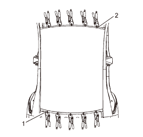
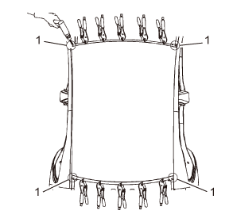
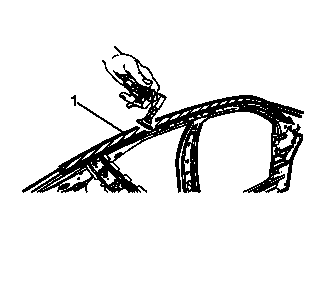
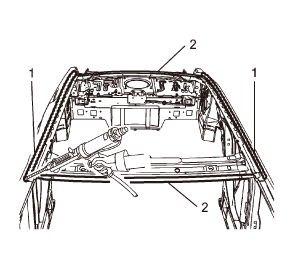
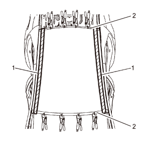

车顶外板的更换
拆卸程序
-
警告：参见 有关碰撞维修许可设备的警告。注意:不按本程序操作将会损坏车辆结构的整体性。注意:所有打磨过的表面在安装前都需进行防腐处理。不进行防腐处理将导致钣金腐蚀加剧，降低碰撞中对乘客的保护。1.解除安全气囊(SIR) 系统。 参见辅助充气式约束系统停用和启用。警告：参见 有关泡沫隔音材料的警告。
- 2.断开蓄电池负极电缆。参见蓄电池负极电缆的断开和连接。
- 3.拆卸所有相关板件和部件。
- 4.目视检查是否损坏。尽可能地修复损坏部位。
- 5.如有必要，清除维修部位的密封胶和防腐材料。参见防腐处理和修理。
-
6.在车顶外板前后车窗处（1）定位、标记焊点并钻除所有的原厂焊点。注意:记录原始焊点的数量和位置，以便安装维修总成。注意:仅钻透车顶外板板件；不可损坏任何内板或加强件。参见 结构识别。
-
7.在车顶纵梁区域上，使用切断砂轮或同等品在车顶边缘(1) 内侧30毫米切割板件。注意:切割时要小心保护相邻的板件。切割纵梁结构内侧。注意:记录原始焊点的数量和位置，以便安装维修总成。
- 8.拆下板件的中间部分。
-
9.使用切断砂轮或同等品磨掉金属焊条惰性气体铜焊接缝(1) ，以分离板件的剩余部分。
- 10.拆下原板件的剩余部分。
安装程序
- 1.预处理所有接合面，保证表面光顺。
注意:如果存在耐冲击粘合剂，则需将其去除。
-
2.试安装车辆的维修面板，在后窗开口处(1) 将板件夹紧到位。从前到后调整车顶的弓形件。在挡风玻璃开口区域(2)并用卡钳固定；(位置1至位置2）。
-
3.在车顶四个角与车身重合处（位置 1），钻四个3.6mm 定位孔。
- 4.取下夹紧卡钳并移走车顶板。
-
5.用砂轮或同等品(1) 预处理车辆的车顶纵梁区域。
- 6.清洁各配合面，在各焊接面涂钣金烧焊防氧化剂。
- 7.预处理车顶纵梁粘接区域。
-
8.在车顶左右纵梁（位置1）涂12mm宽的静止玻璃粘合剂（聚氨酯）。
- 9.车顶前后风窗上边缘（位置2）涂抹密封胶，并在车顶横梁上增涂减振胶。
- 10.将车顶维修件放置到位并将定位件插入到四个定位孔中。
-
11.用卡钳夹紧车顶的前后风窗玻璃上边缘结合处（位置1），均匀平整按压车顶上纵梁结合面（位置2），去除多余的静止玻璃粘合剂。注意:根据粘合剂制造商说明让粘合剂充分固化后可进行后续操作。
-
12.相应地沿窗口(1) 焊接。

- 13.清理并处理焊接表面。
- 14.用高质量接缝密封剂填充外侧车顶板和车身侧车顶纵梁之间的间隙。遵照制造商的说明。参见防腐处理和修理。
- 15.在维修部位涂抹防腐材料。参见防腐处理和修理。
- 16.安装所有相关板件和部件。
- 17.连接蓄电池负极电缆。参见蓄电池负极电缆的断开和连接。
- 18.启动安全气囊系统。参见辅助充气式约束系统停用和启用。